A.1: Shoot the Pictures
I shot each photo standing still and focused on trying to make sure that that the height of the images as I was rotating stayed the same. I tried to align the photos to get around 50% overlap using the object in the image like the middle of the jersey and the middle of the tapestry to decide where to take the photo.
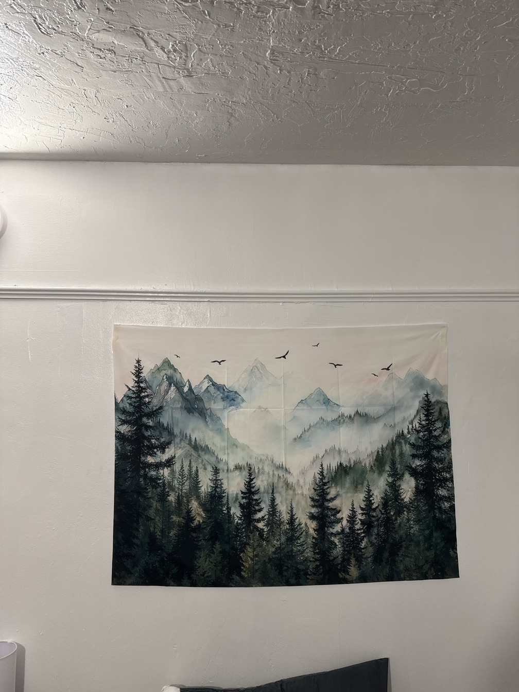
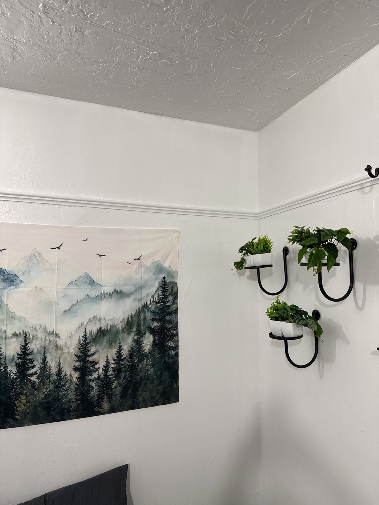
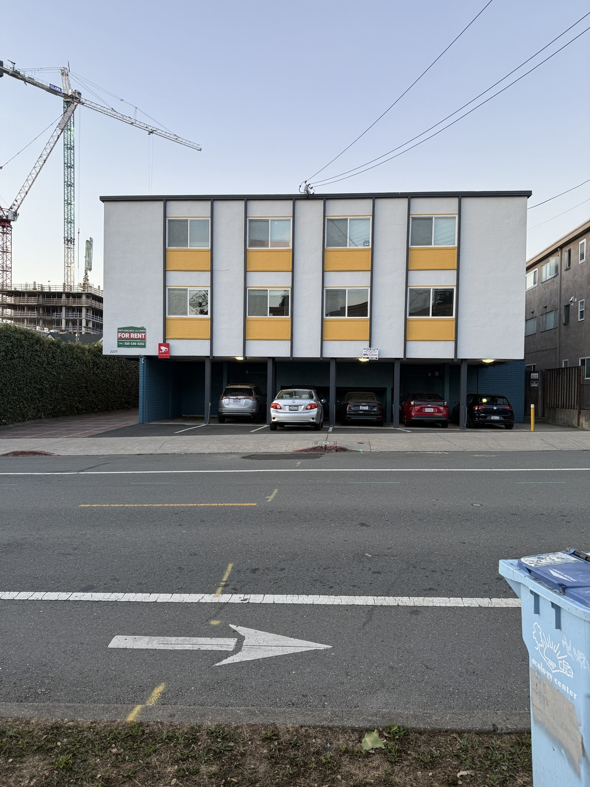
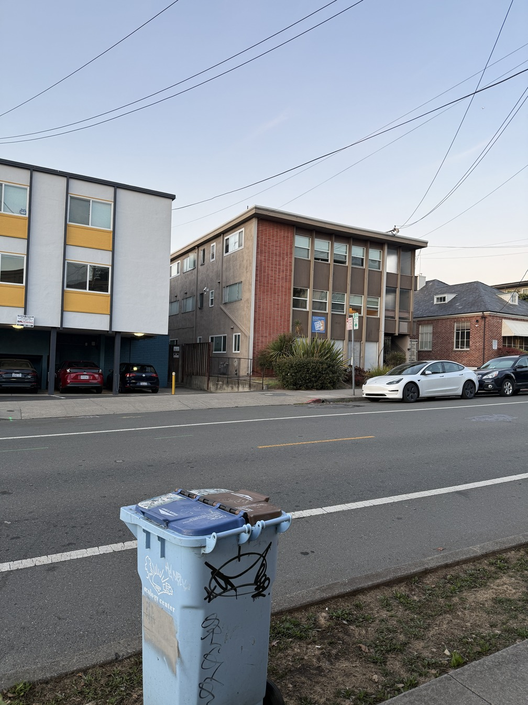
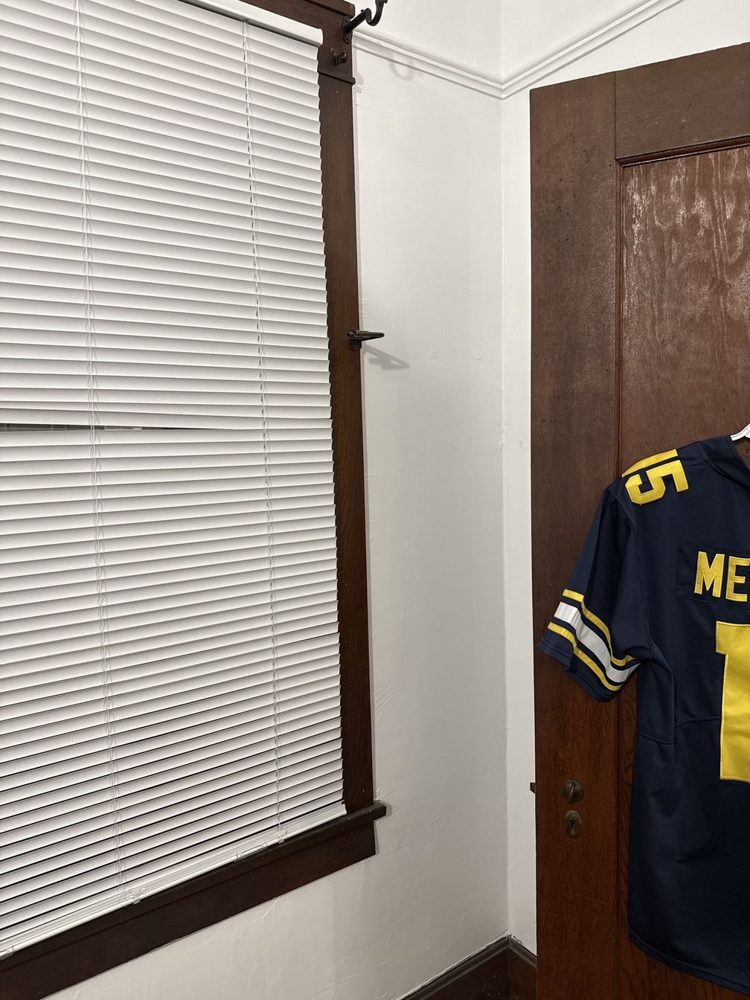
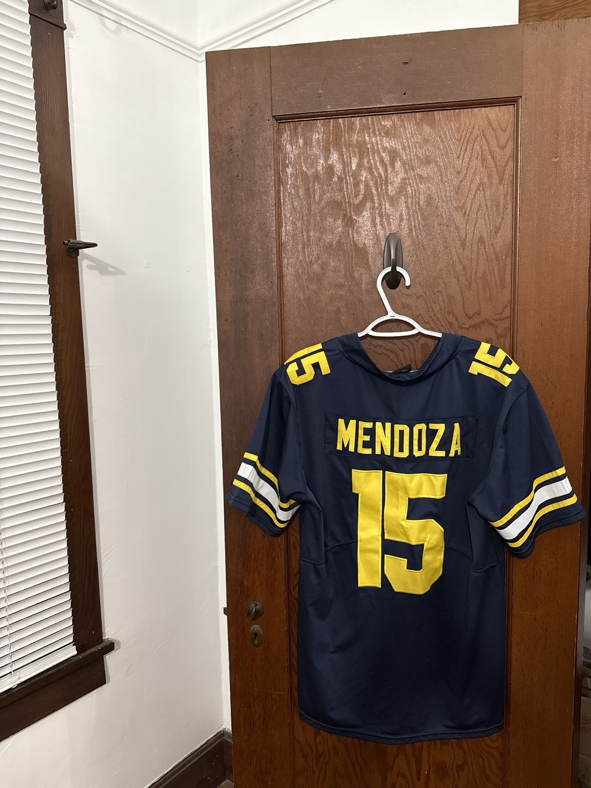
The overlap shows up where the tapestry and the jersey get cut off: each one is split between the two photos of its pair, so part of it appears in both.
A.2: Recover Homographies
I tried the follow the approach that was discussed in the dicussion/lecture slides. I lifted each (x,y) point to (x,y,1) and then multiplied by H and divided by the third value so that the result lands back to the z = 1 plane. That division is what allows for the homography to create perspective effects like the vanishing point and the farther parts of an image shrinking.
The bottom-right entry of H is fixed to 1, which leaves 8 unknowns (h1 to h8). Writing out the multiply-then-divide
for one point (x, y) that lands at (x', y') gives:
x' = (h1 x + h2 y + h3) / (h7 x + h8 y + 1)
y' = (h4 x + h5 y + h6) / (h7 x + h8 y + 1)
Multiplying both sides by the bottom part turns these into two equations that are linear in the unknowns:
h1 x + h2 y + h3 − h7 x x' − h8 y x' = x'
h4 x + h5 y + h6 − h7 x y' − h8 y y' = y'
So every point pair adds two rows to a system A h = b. I set this up the same way as Problem 2.2 from the discussion worksheet, which stacks the two rows for each of four point pairs.
My code builds exactly this matrix, just with more rows. Four pairs would be just enough to solve for the 8 unknowns, but clicked points are never perfectly placed, so I clicked extra pairs on distinct features like corners and peaks in each set to try and get it as accurate as possible. Least squares picks the H that fits all of them as closely as possible , which averages out small clicking errors. Below, for the tapestry, the jersey and the street in that order, are the points I clicked, the full system and the H that least squares recovered.
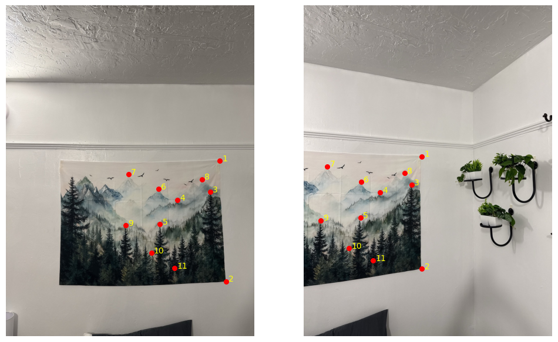
| h1 | h2 | h3 | h4 | h5 | h6 | h7 | h8 | b |
|---|---|---|---|---|---|---|---|---|
| 868 | 631 | 1 | 0 | 0 | 0 | -414904 | -301618 | 478 |
| 0 | 0 | 0 | 868 | 631 | 1 | -532084 | -386803 | 613 |
| 894 | 1121 | 1 | 0 | 0 | 0 | -428226 | -536959 | 479 |
| 0 | 0 | 0 | 894 | 1121 | 1 | -956580 | -1199470 | 1070 |
| 829 | 757 | 1 | 0 | 0 | 0 | -362273 | -330809 | 437 |
| 0 | 0 | 0 | 829 | 757 | 1 | -603512 | -551096 | 728 |
| 696 | 790 | 1 | 0 | 0 | 0 | -215064 | -244110 | 309 |
| 0 | 0 | 0 | 696 | 790 | 1 | -528960 | -600400 | 760 |
| 625 | 889 | 1 | 0 | 0 | 0 | -143125 | -203581 | 229 |
| 0 | 0 | 0 | 625 | 889 | 1 | -538750 | -766318 | 862 |
| 620 | 746 | 1 | 0 | 0 | 0 | -143840 | -173072 | 232 |
| 0 | 0 | 0 | 620 | 746 | 1 | -444540 | -534882 | 717 |
| 498 | 686 | 1 | 0 | 0 | 0 | -47310 | -65170 | 95 |
| 0 | 0 | 0 | 498 | 686 | 1 | -325692 | -448644 | 654 |
| 796 | 706 | 1 | 0 | 0 | 0 | -324768 | -288048 | 408 |
| 0 | 0 | 0 | 796 | 706 | 1 | -542076 | -480786 | 681 |
| 485 | 893 | 1 | 0 | 0 | 0 | -33465 | -61617 | 69 |
| 0 | 0 | 0 | 485 | 893 | 1 | -423405 | -779589 | 873 |
| 590 | 1005 | 1 | 0 | 0 | 0 | -107380 | -182910 | 182 |
| 0 | 0 | 0 | 590 | 1005 | 1 | -582330 | -991935 | 987 |
| 684 | 1068 | 1 | 0 | 0 | 0 | -192204 | -300108 | 281 |
| 0 | 0 | 0 | 684 | 1068 | 1 | -709308 | -1107516 | 1037 |
[ 1.44696 -0.0819753 -547.148 ] [ 0.345975 1.23299 -235.694 ] [ 0.000468071 -4.96382e-05 1 ]
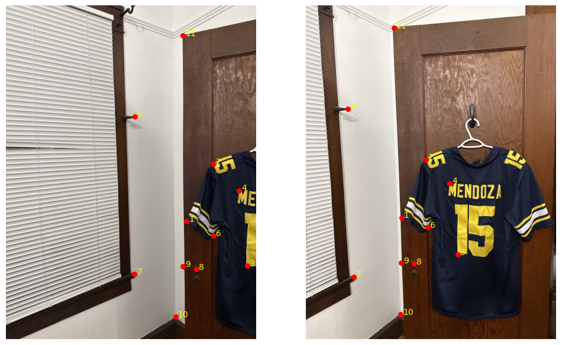
| h1 | h2 | h3 | h4 | h5 | h6 | h7 | h8 | b |
|---|---|---|---|---|---|---|---|---|
| 727 | 869 | 1 | 0 | 0 | 0 | -279168 | -333696 | 384 |
| 0 | 0 | 0 | 727 | 869 | 1 | -620858 | -742126 | 854 |
| 835 | 638 | 1 | 0 | 0 | 0 | -403305 | -308154 | 483 |
| 0 | 0 | 0 | 835 | 638 | 1 | -517700 | -395560 | 620 |
| 972 | 1049 | 1 | 0 | 0 | 0 | -594864 | -641988 | 612 |
| 0 | 0 | 0 | 972 | 1049 | 1 | -974916 | -1052147 | 1003 |
| 940 | 744 | 1 | 0 | 0 | 0 | -543320 | -430032 | 578 |
| 0 | 0 | 0 | 940 | 744 | 1 | -673040 | -532704 | 716 |
| 519 | 448 | 1 | 0 | 0 | 0 | -87711 | -75712 | 169 |
| 0 | 0 | 0 | 519 | 448 | 1 | -215904 | -186368 | 416 |
| 836 | 926 | 1 | 0 | 0 | 0 | -409640 | -453740 | 490 |
| 0 | 0 | 0 | 836 | 926 | 1 | -747384 | -827844 | 894 |
| 518 | 1082 | 1 | 0 | 0 | 0 | -98938 | -206662 | 191 |
| 0 | 0 | 0 | 518 | 1082 | 1 | -565656 | -1181544 | 1092 |
| 767 | 1063 | 1 | 0 | 0 | 0 | -333645 | -462405 | 435 |
| 0 | 0 | 0 | 767 | 1063 | 1 | -798447 | -1106583 | 1041 |
| 713 | 1050 | 1 | 0 | 0 | 0 | -273079 | -402150 | 383 |
| 0 | 0 | 0 | 713 | 1050 | 1 | -739381 | -1088850 | 1037 |
| 683 | 1254 | 1 | 0 | 0 | 0 | -259540 | -476520 | 380 |
| 0 | 0 | 0 | 683 | 1254 | 1 | -849652 | -1559976 | 1244 |
| 713 | 121 | 1 | 0 | 0 | 0 | -251689 | -42713 | 353 |
| 0 | 0 | 0 | 713 | 121 | 1 | -63457 | -10769 | 89 |
[ 1.29003 0.0541558 -495.828 ] [ 0.182018 1.26753 -172.54 ] [ 0.000322585 1.46364e-05 1 ]
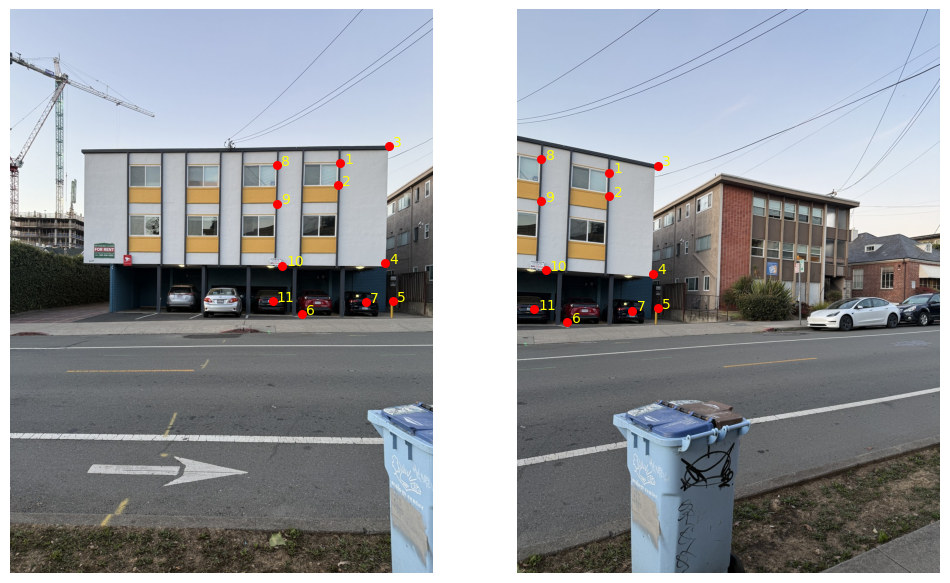
| h1 | h2 | h3 | h4 | h5 | h6 | h7 | h8 | b |
|---|---|---|---|---|---|---|---|---|
| 787 | 367 | 1 | 0 | 0 | 0 | -171566 | -80006 | 218 |
| 0 | 0 | 0 | 787 | 367 | 1 | -306143 | -142763 | 389 |
| 782 | 418 | 1 | 0 | 0 | 0 | -171258 | -91542 | 219 |
| 0 | 0 | 0 | 782 | 418 | 1 | -347990 | -186010 | 445 |
| 903 | 326 | 1 | 0 | 0 | 0 | -302505 | -109210 | 335 |
| 0 | 0 | 0 | 903 | 326 | 1 | -335916 | -121272 | 372 |
| 894 | 605 | 1 | 0 | 0 | 0 | -289656 | -196020 | 324 |
| 0 | 0 | 0 | 894 | 605 | 1 | -563220 | -381150 | 630 |
| 912 | 695 | 1 | 0 | 0 | 0 | -304608 | -232130 | 334 |
| 0 | 0 | 0 | 912 | 695 | 1 | -649344 | -494840 | 712 |
| 695 | 726 | 1 | 0 | 0 | 0 | -82705 | -86394 | 119 |
| 0 | 0 | 0 | 695 | 726 | 1 | -517775 | -540870 | 745 |
| 848 | 697 | 1 | 0 | 0 | 0 | -232352 | -190978 | 274 |
| 0 | 0 | 0 | 848 | 697 | 1 | -608864 | -500446 | 718 |
| 635 | 371 | 1 | 0 | 0 | 0 | -36195 | -21147 | 57 |
| 0 | 0 | 0 | 635 | 371 | 1 | -226695 | -132447 | 357 |
| 637 | 463 | 1 | 0 | 0 | 0 | -35672 | -25928 | 56 |
| 0 | 0 | 0 | 637 | 463 | 1 | -291109 | -211591 | 457 |
| 648 | 611 | 1 | 0 | 0 | 0 | -43416 | -40937 | 67 |
| 0 | 0 | 0 | 648 | 611 | 1 | -402408 | -379431 | 621 |
| 626 | 696 | 1 | 0 | 0 | 0 | -25040 | -27840 | 40 |
| 0 | 0 | 0 | 626 | 696 | 1 | -447590 | -497640 | 715 |
[ 1.98121 -0.0349634 -1154.38 ] [ 0.720357 1.72915 -518.122 ] [ 0.000971002 -1.73559e-05 1 ]
A.3: Warp the Images
To warp an image with H, I use inverse warping. First I push the four corners of the input image through H to find where they land, and the box around those four points becomes the size of the output image. Then, for every pixel in the output, I send its coordinates back through the inverse of H to find where it came from in the input and copy the color from there. Going backward like this means every output pixel gets exactly one value, with no holes. I also keep an alpha mask: it is 1 where the output pixel's source location lands inside the input image and 0 everywhere else, and those outside pixels stay black.
My first version did this one pixel at a time: a loop over every output pixel, multiplying H−1 by that pixel's (x, y, 1) and dividing by the third value. Since the same matrix is applied to every pixel, it crossed my mind that I could do all of them in a single matrix multiplication instead, and I wanted to try it. I collect every output pixel's coordinates as the columns of one 3 × N matrix (a row of all the x's, a row of all the y's, and a row of 1s), multiply it by H−1 once, and divide the first two rows by the third. Each column of the result is that pixel's source location. I find the four corners for the output box the same way, as the columns of one 3 × 4 matrix.
The inverse homography usually gives a location between pixels, like (412.3, 88.9), so I need a way to pick a color. I treat whole-number coordinates as pixel centers, with x as the column and y as the row. Nearest neighbor rounds to the closest pixel, (412, 89), and copies its color.
Bilinear interpolation instead blends the four pixels around the location instead. The whole-number part of the location gives the top-left neighbor, (412, 88), and the leftover fractions say how far the point is toward the next pixel: 0.3 of the way to the right and 0.9 of the way down. I blend the two top pixels using the horizontal fraction, do the same for the two bottom pixels, and then blend those two results using the vertical fraction. Closer pixels get more weight, and the four weights always add up to 1, so the color is a weighted average of its neighbors.
col = int(src_x) # 412
row = int(src_y) # 88
frac_x = src_x - col # 0.3
frac_y = src_y - row # 0.9
top = (1 - frac_x) * image[row, col] + frac_x * image[row, col + 1]
bottom = (1 - frac_x) * image[row + 1, col] + frac_x * image[row + 1, col + 1]
color = (1 - frac_y) * top + frac_y * bottom
To test the warp, I rectified two flat rectangles that were photographed at an angle. I clicked their four corners and mapped them to a true rectangle, which gives four point pairs, enough for computeH. I estimated each rectangle's proportions just based on what I measured when clicking the points. Below are the corners I clicked on the street (left) and the door (right). Under them are the street and then the door, each warped with nearest neighbor (left) and bilinear (right), then a 3× zoom of the street (left) and the door (right), with nearest neighbor on the left and bilinear on the right inside each zoom, followed by how long each method took.
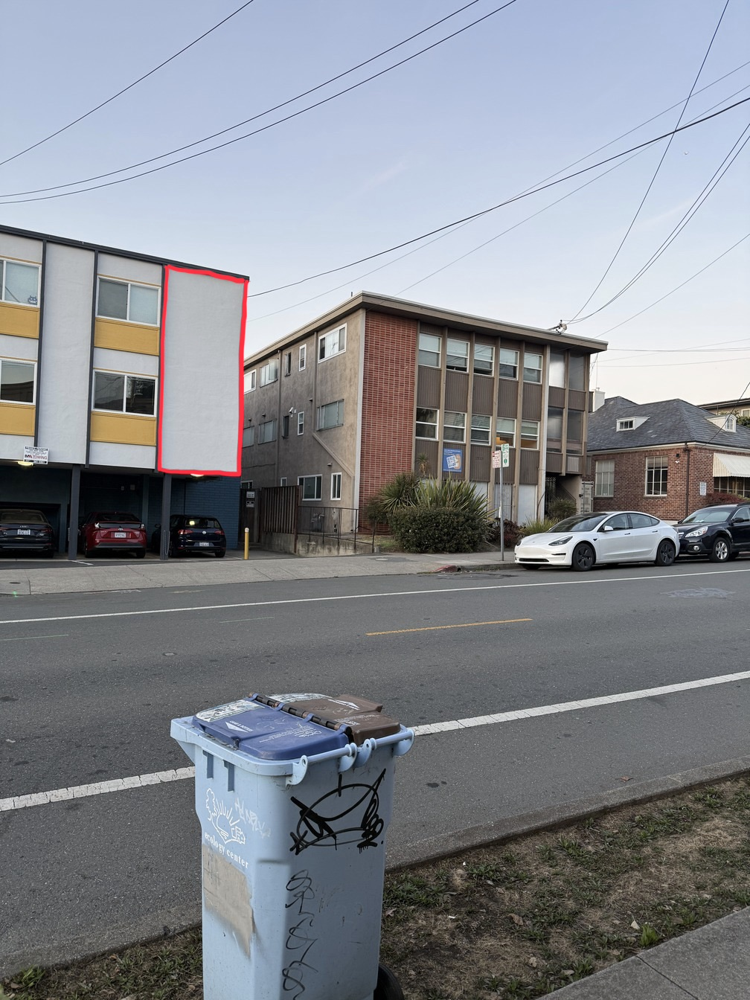
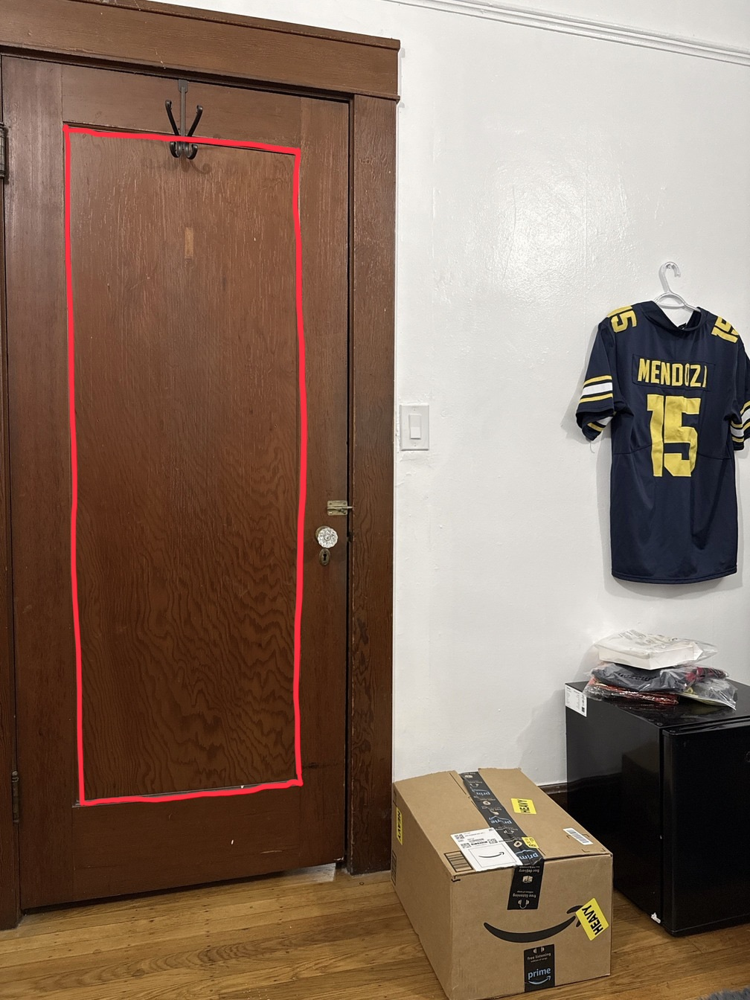
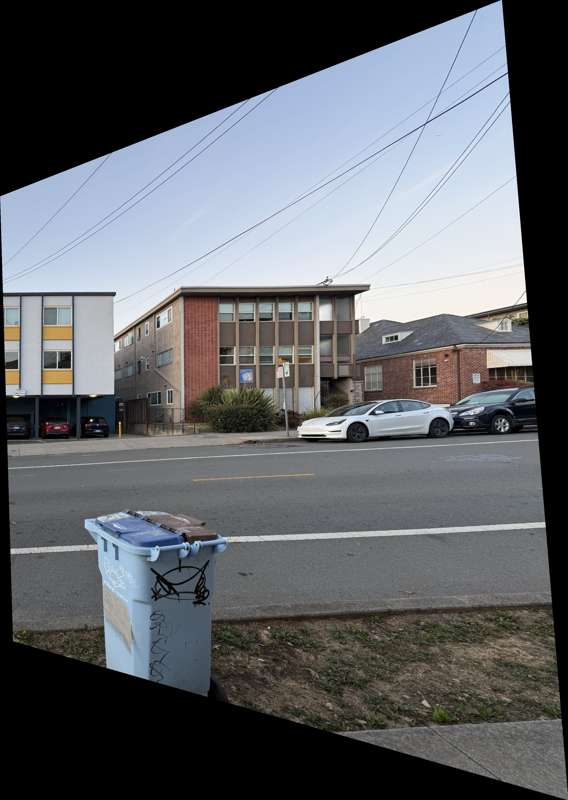
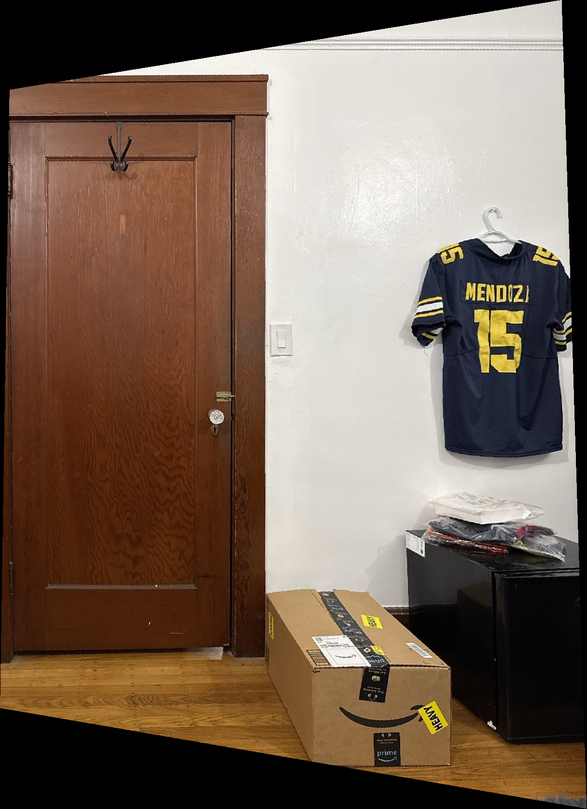
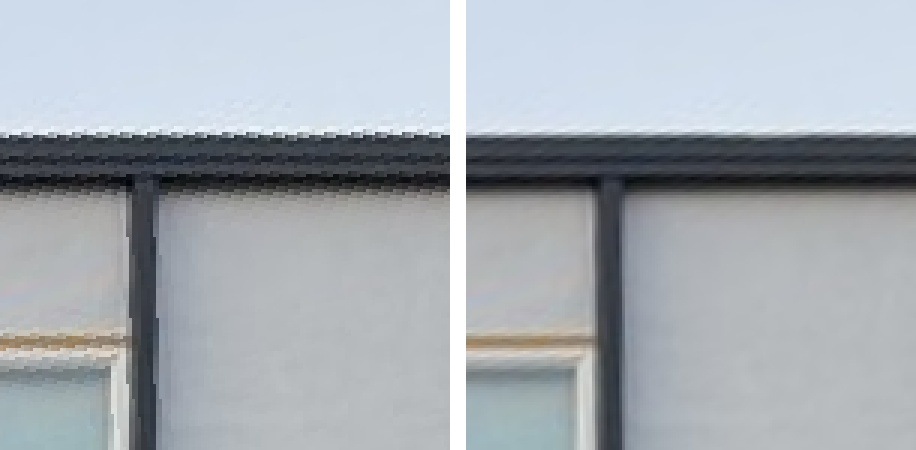
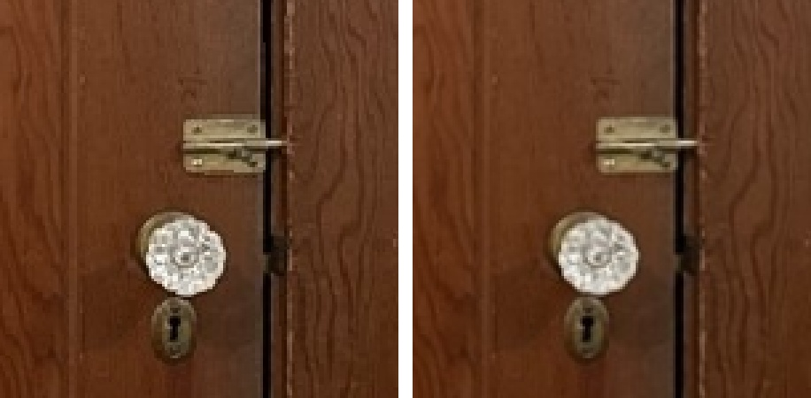
| Rectification | Output size | Nearest neighbor | Bilinear |
|---|---|---|---|
| Street | 2896 × 4077 | 1.80 s | 2.82 s |
| Door | 1218 × 1679 | 0.27 s | 0.44 s |
Both rectified images look good straight on. The street's end panel comes out as a rectangle with vertical sides and a level roof line, and the door panel comes out as a tall, straight rectangle. To me, nothing in either image looks stretched. The black areas around the edges are pixels whose source lands outside the photo (alpha = 0).
At full size the two methods look the same, but zoomed in, nearest neighbor gives blocky, sharp pointy edges on each surface while bilinear gives smooth ones. Bilinear took about 1.6 times as long, since it reads and blends four pixels instead of one. The extra time is small, so bilinear is the better default for photos.
A.4: Blend the Images into a Mosaic
For each pair, I kept the second photo as the reference and warped the first photo into its frame with bilinear interpolation, using the H from A.2. The warp tells me where the first photo lands, which can be above or to the left of the second photo, so I made a canvas just big enough to hold both and placed each image on it at the right offset.
Pasting one image over the other would leave a visible seam, since the two photos differ slightly in brightness. Instead, I weight each pixel by its distance to the edge of its own image (a distance transform of its alpha mask), so pixels in the middle of a photo count a lot and pixels near its border count very little. I then split each image into two bands. The low band is the image blurred with a Gaussian (sigma 2), which holds the overall color and brightness. The high band is the image minus that blur, which holds the edges and fine detail. I blend the low bands with a weighted average, so brightness fades smoothly from one photo to the other. For the high band, I take each pixel from whichever image has the larger weight there, so edges come from one photo and don’t appear doubled. Adding the two bands gives the mosaic. Black areas are where neither photo covers the canvas. Below are the two source photos and the resulting mosaic for the tapestry, the street and the jersey.
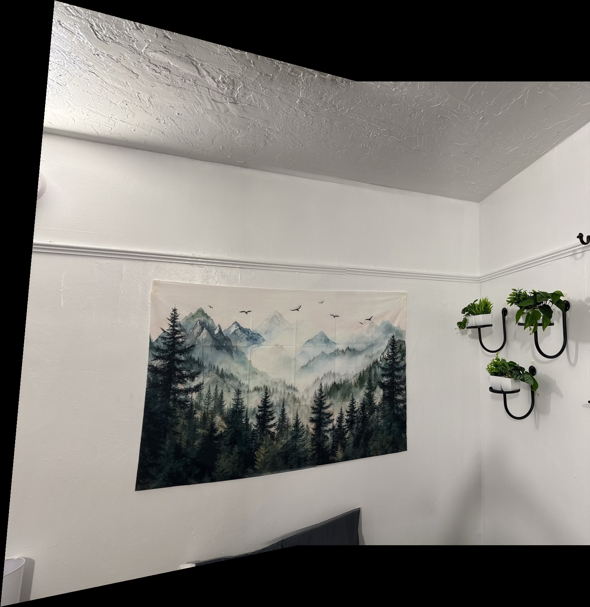
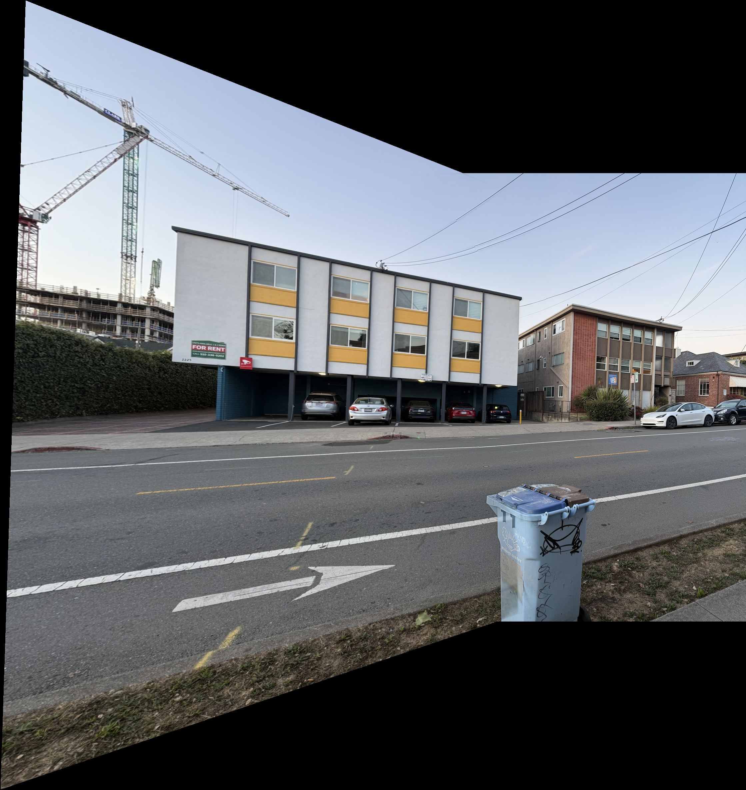
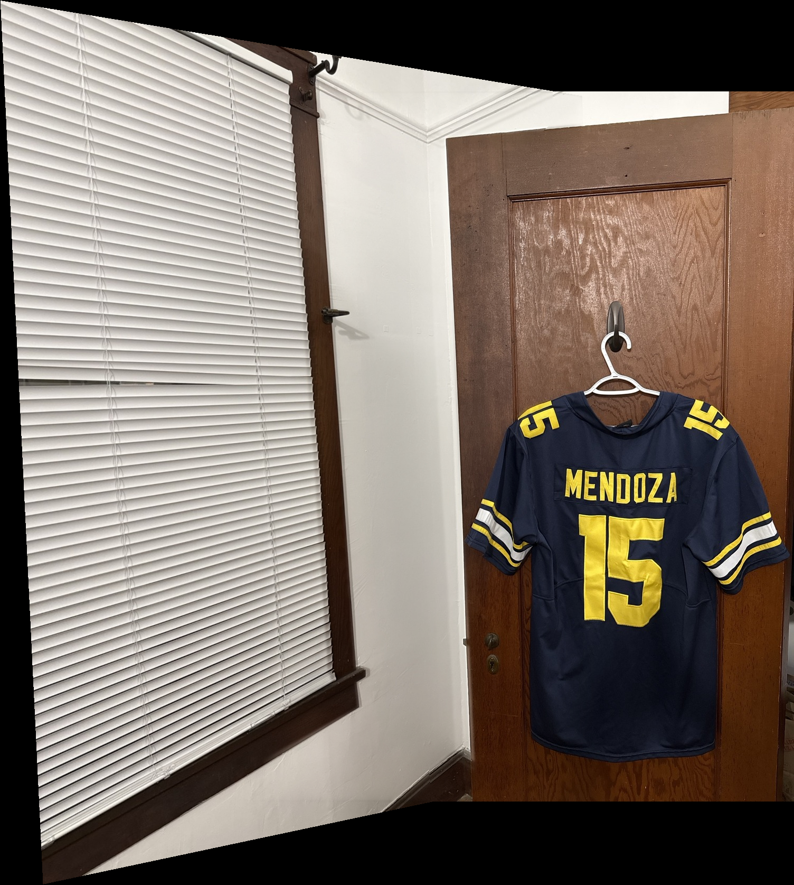
The tapestry and the jersey blend without a visible seam. On the street, the buildings line up well. The recycling bin is the hardest spot: a homography only lines up points on one plane, or the whole scene if the camera rotates about a fixed point, and the bin was much closer to me than the buildings while my phone did not rotate about exactly the same point, so the bin shifted against the background between the two photos (parallax). In the first photo that spot shows road and grass. Because the detail comes from only one photo, the bin's edges and graffiti stay sharp instead of turning into a see-through ghost, with only a faint haze left on its left side from the averaged colors.
B.1: Harris Corners and ANMS
I used the provided harris.py to find corners at a single scale. It computes a corner strength for every pixel, which is high where a small window would change a lot if it slid in any direction, and keeps every pixel that is stronger than its 8 neighbors. It also throws away anything within 20 pixels of the border, so the 40×40 window in B.2 always fits. This gives far too many corners, so I used Adaptive Non-Maximal Suppression (ANMS) from Section 3 of the paper to pick 250 of them. For each corner, I find the distance to the nearest corner that is clearly stronger, meaning its own strength is less than 0.9 times that neighbor’s (c_robust = 0.9 from the paper). A corner with a large distance is the strongest point in a big area, so I keep the 250 corners with the largest distances. The left image shows all the Harris corners, and the right image shows the 250 kept after ANMS.
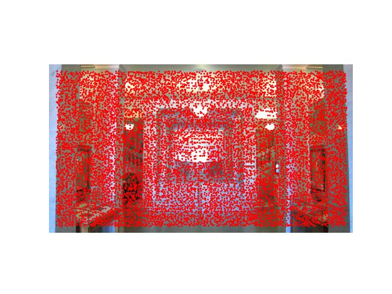
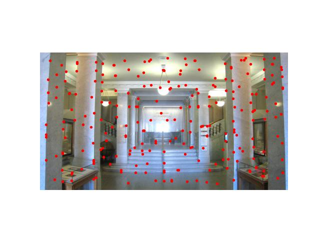
Harris found all of the corners and they covered the entire image. It even covered the flat areas and just considered the straight up marbling on the floors and the pillars. With no minimum strength, any tiny bump would count. After ANMS, the corners are spread evenly across the image and that allowed many of them to sit on actual corners like stair edges or lamps or the plaque text, which made it better. Sometimes, the corner choices were questionable because there were no stronger corners nearby like in the center of one of the columns.
B.2: Feature Descriptors
For each corner, I blurred the grayscale image with a Gaussian (sigma 1.5), then sampled an 8×8 grid of values from the 40×40 window around the corner, taking every 5th pixel. This matches the paper’s 8×8 patch with a sample spacing of 5. The blur keeps every 5th pixel from being a single random value, since each one now holds an average of its surroundings. I then normalized each patch to have mean 0 and standard deviation 1, so the same spot gives nearly the same descriptor even if one photo is brighter or has more contrast. The top row shows five 40×40 windows and the bottom row shows their 8×8 descriptors.
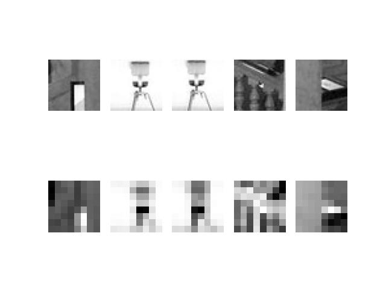
Each descriptor keeps the rough layout of light and dark in its window, like the bright rectangle in the corner of the first one or the dark lamp fixture down the middle of the second, but loses all the fine detail and texture. Every descriptor also uses the full range from black to white, even though the windows have very different brightness, which is the normalization at work. Two of the corners are on the same lamp only 4 pixels apart, and their descriptors look almost identical. That is what the large blurred window is for: Harris corners are often off by 1 to 3 pixels, and a small shift barely changes the descriptor.
B.3: Feature Matching
To match features, I measured the squared distance between every descriptor in the first photo and every descriptor in the second. For each feature, I found its closest descriptor (the first nearest neighbor) and its second closest. Following Lowe’s approach from Section 5 of the paper, I keep a match only if the first nearest neighbor is much closer than the second, with a ratio below 0.4, which I picked from Figure 6b, where correct matches cluster at low ratios and wrong ones near 1. A single distance cutoff doesn’t work, because distances depend on the feature: a busy patch is far from everything, including its true match, while a smooth patch is close to everything. If the best and second-best candidates are about equally close, the feature is ambiguous, so it is thrown out. The pairs below are the tapestry, the street and the jersey, with photo 1 on the left and photo 2 on the right. Matching points share a color.
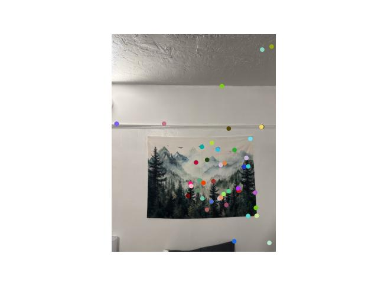
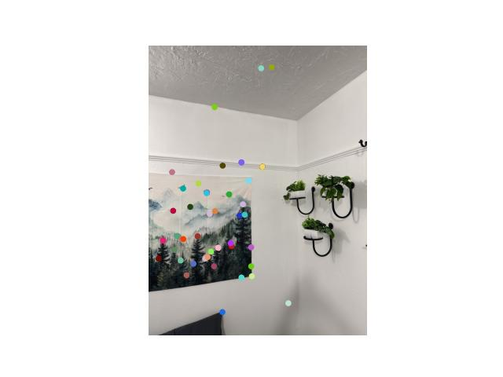
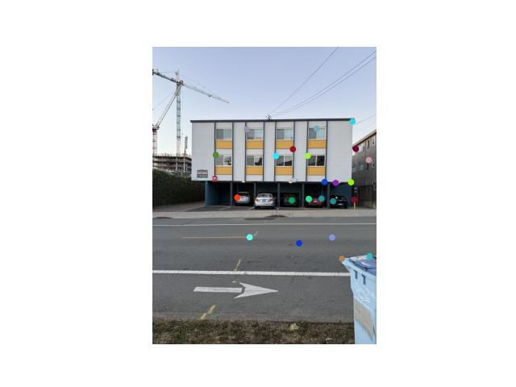
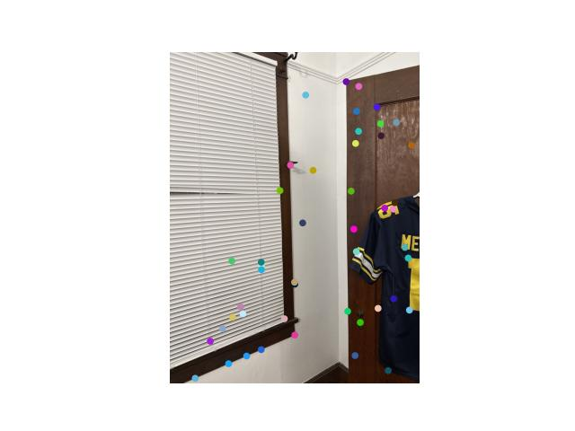
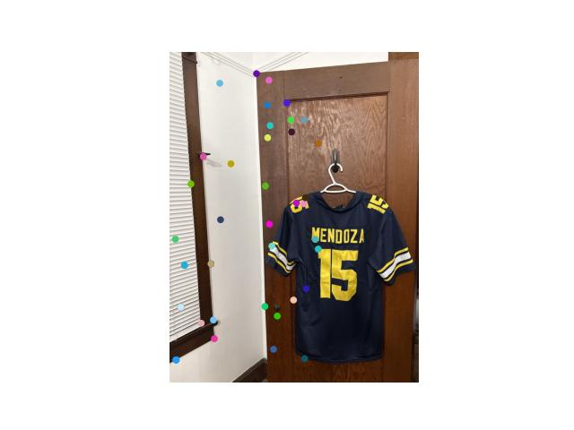
Most matches on the tapestry land inside the artwork, on the mountains and trees, with a few along the rail above it. Those are the most distinctive spots in the scene, so their best match is clearly better than the second best. The shared colors make it easy to check: a point on a tree in photo 1 has the same color as the same tree in photo 2. Unlike the ANMS corners in B.1, which also landed on flat areas, almost none of the matches are on blank wall. A smooth patch of wall looks like every other smooth patch, so its closest and second-closest descriptors are about equally close and it fails the ratio test. A few weak matches still get through, like the ones on the ceiling and the blank wall in the tapestry pair and on the road in the street pair, so the ratio test alone doesn’t remove every bad match, and RANSAC handles the rest in B.4.
B.4: RANSAC and Automatic Mosaics
Even after the ratio test, a few wrong matches can remain, and a single wrong pair can throw off a least-squares homography. RANSAC gets around this by trial and error. I pick 4 random matches, compute the exact homography through them with my computeH from Part A, and apply it to every matched point in photo 1. Matches that land within 4 pixels of their partner in photo 2 count as inliers, since they agree with that homography. Harris corners are usually off by 1 to 3 pixels, so 4 leaves a little margin while wrong matches still land much farther away. I repeat this 5000 times, keep the largest set of inliers, and then recompute H with least squares on all of them. If a sample includes a wrong match, its homography is off and few points agree with it, so wrong matches never end up in the final fit. With the final H, I made each mosaic with make_mosaic from Part A, using the same warping and blending as before. For each pair, the first row shows the RANSAC inliers on photo 1 (left) and photo 2 (right), and the second row shows the mosaic from my hand-clicked points (left) next to the automatic one (right).
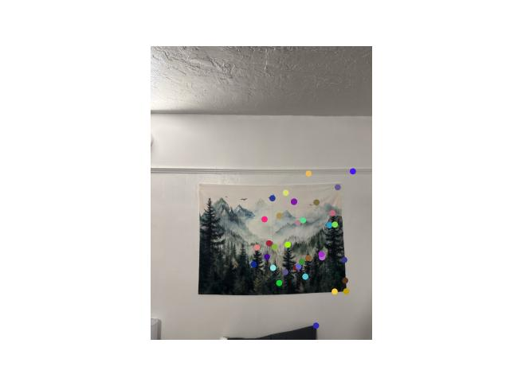
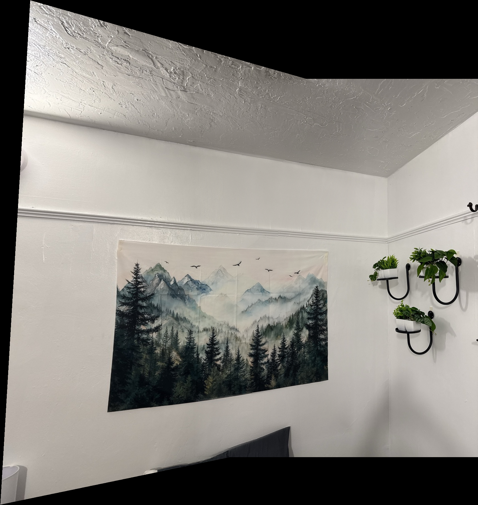
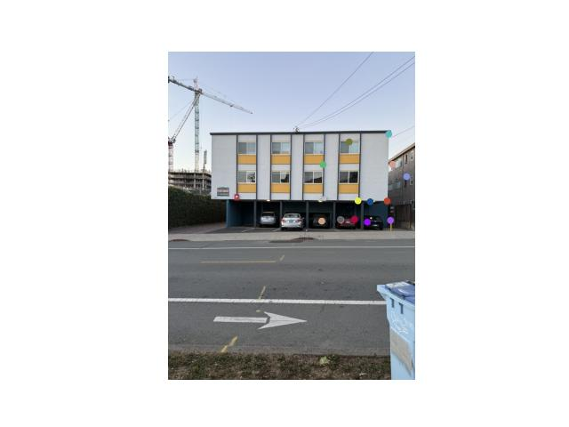
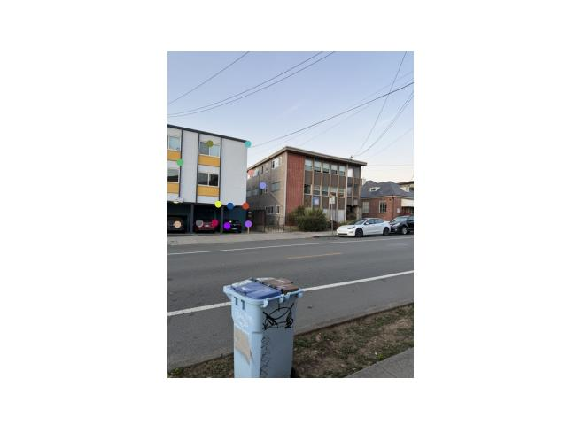
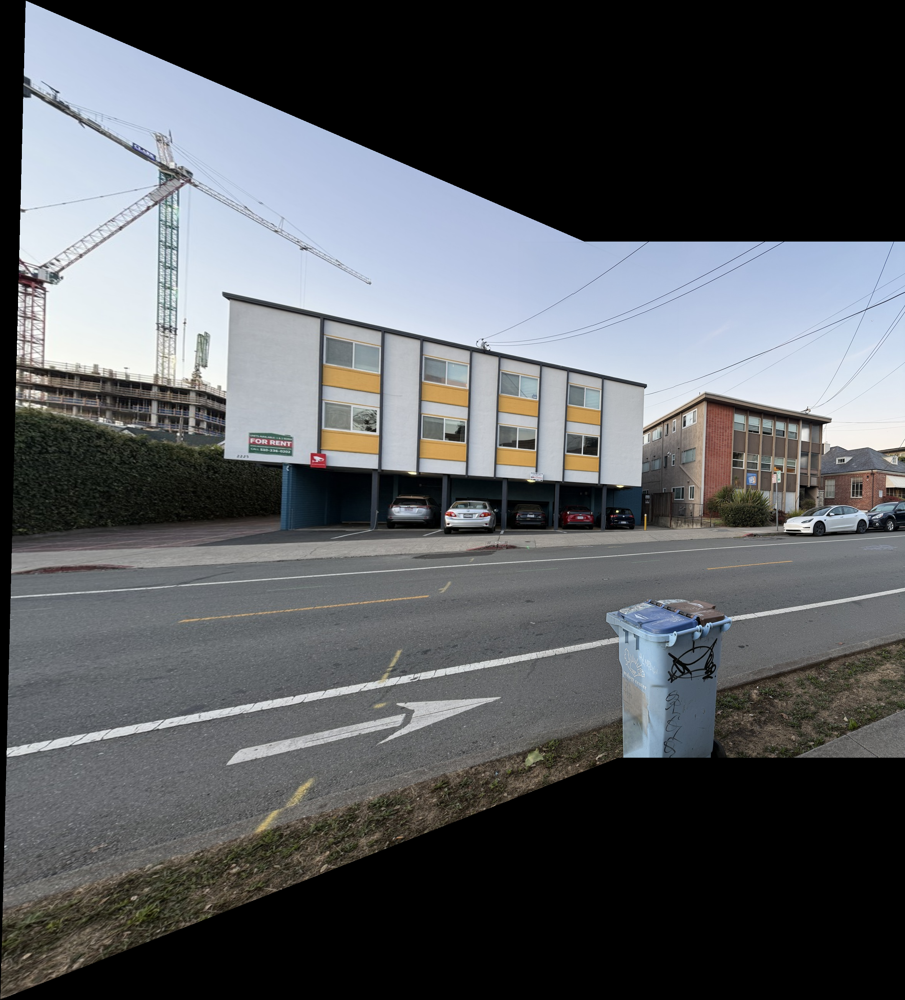
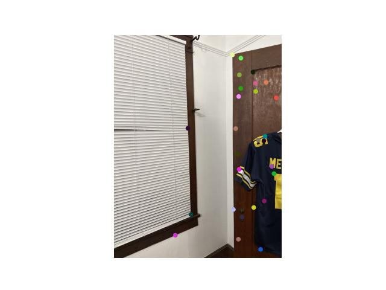
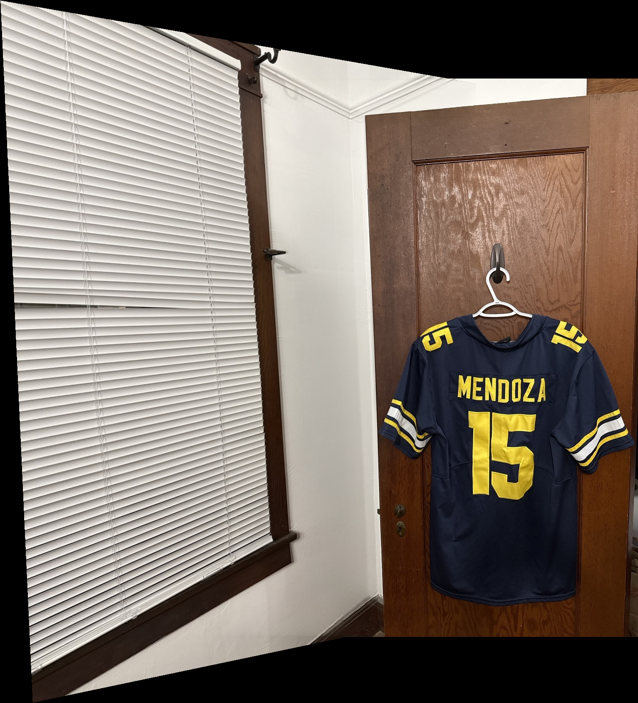
After RANSAC, the weak matches from B.3 are gone. On the tapestry, the inliers sit on the mountains, the trees and the rail, and the points on the ceiling and the blank wall were removed. On the street, RANSAC dropped the matches on the road and the one on top of the recycling bin. The bin was much closer to the camera than the buildings, so its match doesn’t fit the same homography (the same parallax as in A.4). On the jersey, most of the matches on the blinds were removed, since the repeating slats can match the wrong slat, and the inliers sit on the door frame, the window frame and the edge of the jersey. The automatic mosaics look nearly the same as the manual ones. The main difference is the outline of the warped photo, which is angled slightly differently at the edges because the two homographies were fit on different points.